Proprietary to General Electric
Direction 5181166-800, Rev# 7
BrightSpeed Select Service Methods Adv
Proprietary to General Electric |
| Last Revised: | 12 June 2008 |
This LFC (Load from Cold) procedure supports the following systems:
07BW08.3
LightSpeed RT16 with GOC4 Operator console.
LightSpeed Xtra with GOC4 Operator console.
07BW08.4
BrightSpeed Select Elite with LCGOC Operator console.
BrightSpeed Select Edge with LCGOC Operator console.
BrightSpeed Select Excel with LCGOC Operator console.
08BW17.X
LightSpeed RT16 with GOC4 Operator console.
LightSpeed Xtra with GOC4 Operator console.
08BW20.X
BrightSpeed Select Elite with All-In-One Operator console.
BrightSpeed Select Edge with All-In-One Operator console.
BrightSpeed Select Excel with All-In-One Operator console.
Software collector called “07BW08.4” p/n 5235196 contains the following items:
5212704 - LightSpeed Xtream Console Operating System
Version - GEMS Linux 6.2.9
5235162 - LightSpeed Applications Software DVD
Version 07BW08.X
5212235 - Xtream Serial-Over-LAN Service Software
Supports: Westville& Jarrell DARC/VDARC OS 6.2.9
5235197 - Class C
5235198 - Class M
| NOTE: | Class C/M install CD are not shipped with system. |
| NOTE: | The Xtream Serial-Over-Lan Service Software is not used during the LFC unless instructed via a pop-up message box "SOL Service - ...run the Serial Over LAN Service CD...". This CD is loaded directly into the DARC Node. Then press the reset (or cycle power) at the front panel of the DARC Node as required. This CD will auto-eject when the SOL load process is complete. |
Software collector called “08BW20.X” p/n 5314726 contains the following items:
5212704 - LightSpeed Xtream Console Operating System
Version - GEMS Linux 6.2.9
5314727 - LightSpeed Applications Software DVD
Version 08BW20.X
5314754 - Class C
5314755 - Class M
| NOTE: | Class C/M install CD are not shipped with system. |
| NOTE: | The Xtream Serial-Over-Lan Service Software is not used during the LFC unless instructed via a pop-up message box "SOL Service - ...run the Serial Over LAN Service CD...". This CD is loaded directly into the DARC Node. Then press the reset (or cycle power) at the front panel of the DARC Node as required. This CD will auto-eject when the SOL load process is complete. |
| NOTE: | If it's an All-in-One console, skip this section. |
Open Unix Shell and type the following:
{ctuser@hostname} rsh darc
[ctuser@darc] cat /proc/scsi/scsi
| NOTE: | Output should look similar to the following. Look for
two drives. If there are NOT two drives, troubleshoot. Attached devices: Host: scsi0 Channel: 00 Id: 00 Lun: 00 Vendor: SEAGATE Model: ST336753LW Rev: 0006 Type: Direct-Access ANSI SCSI revision: 03 Host: scsi0 Channel: 00 Id: 01 Lun: 00 Vendor: SEAGATE Model: ST336753LW Rev: 0006 Type: Direct-Access ANSI SCSI revision: 03 |
Close the Unix Shell.
Perform this recommended procedure to check DVD or MOD functionality prior to performing a LFC.
Verify the SCSI Tower DVD-RAM power is applied.
Verify the SCSI Tower terminator LED is lit (located at the rear).
Verify the Host Computer DVD-ROM drive does not have a disk in it.
Open a Unix Shell and verify the SCSI Tower components are present (two examples are shown below, but may not match your SCSI Tower configuration):
{ctuser@hostname} scsistat
Example #1:
Device 0 00 Direct-Access SEAGATE ST336753LW FW Rev: HPS2 OS 36 GB
Device 1 01 Direct-Access SEAGATE ST373453LW FW Rev: HPS2 73 GB Image
Device 1 02 Direct-Access SEAGATE ST373453LW FW Rev: HPS2 73 GB Image
Device 2 03 Optical Device SONY SMO-F551-SD FW Rev: 1.04 SCSI Tower Sony MOD
Device 2 04 CD-ROM MATSHITA DVD-RAM LF-D521 FW Rev: A109 SCSI Tower DVD-RAM
Example #2:
Device 0 00 Direct-Access SEAGATE ST336753LW FW Rev: HPS3
Device 1 01 Direct-Access SEAGATE ST373453LW FW Rev: HPS3
Device 1 02 Direct-Access SEAGATE ST373453LW FW Rev: HPS3
Device 2 03 Optical Device SONY SMO-F551-SD FW Rev: 1.03 SCSI Tower Sony MOD
Device 2 04 CD-ROM HITACHI DVD-RAM GF-2050 FW Rev: E372 SCSI Tower Hitachi DVD-RAM
Device 4 00 CD-ROM HL-DT-ST DVD-ROM GDR8163B FW Rev: 0B15
DVD Drive Verification:
Create a temporary testing file:
{ctuser@hostname} su -
Password: #bigguy
{root@hostname} dd if=/dev/urandom of=/tmp/foo bs=1024 count=50k
51200+0 records in
51200+0 records out
Ensure the temporary testing file was created:
{root@hostname} ls -al /tmp/foo
-rw-r--r-- 1 root root 52428800 May 10 11:55 /tmp/foo
(”5242880” represents the file size.)
Calculate the checksum for the local temporary file.
| NOTE: | These numbers will change every time you generate a new file. |
{root@hostname} sum /tmp/foo
44519 51200
| NOTE: | 1st # = checksum (FE should write this down to use for
comparison later) 2nd # = size of file checksum'd |
Checksum File Size in kilobytes
-------- ----------------------
44519 51200
Insert DVD into SCSI Tower.
Data on inserted DVD will be destroyed.
Create a filesystem on the DVD by typing the following:
{root@hostname} mkfsDVD
----------------------------------------------------------
*** CAUTION ***
A filesystem already exists on this DVD.
This utility will create a new file system on the DVD. In turn it will wipe clean any existing files and data. Make sure you have the correct DVD media in the correct DVD drive.
Do you wish to proceed? [n] y
Making file system. This will take approximately 3-5 minutes
-----------------------------------------------------
Mount the DVD:
{root@hostname} mountDVD
Mounting DVD
Copy the file to the target device:
{root@hostname} cp /tmp/foo /DVD && sync
Unmount the drive & eject the DVD to ensure the system's cache is flushed. This is required to calculate the checksum properly.
{root@hostname} unmountDVD
DVD is now unmounted.
Eject the DVD
Reinsert the DVD
Remount the target device, using mountDVD.
Generate checksum on file in DVD drive:
{root@hostname} sum /DVD/foo
45731 51200
Verify (compare) the file's checksum calculated by the host console matches the checksum calculated by the drive.
{root@hostname} unmountDVD
DVD is now unmounted.
Eject the DVD
| Before loading the software onto your CT-only GRE/Xtream console, ensure your system software release 06BW20.5, 07BW08.X, 08BW17.X or 08BW20.X loaded. If it is not at this release, STOP now and load 06BW20.5, 07BW08.X, 08BW17.X or 08BW20.X software. | |
| Do not load this software on a PET/CT system. Do not load this software on a CT GOC1 (IRIX, Pegasus) GOC2 (Linux, Pegasus) Operator Console. | |
Verify that 06BW20.5, 07BW08.X, 08BW17.X or 08BW20.X software is loaded on the system by one of the following methods:
Open a Unix Shell and type one of the following:
check_config
- OR -
swhwinfo -all
Look at the Common Service Desktop Home Page.
Record Autovoice Volume control settings (<ALT-F3> by Toolchest, upper right corner).
Write down all of the system INFO information on the reconfig screens, including the network information (use the appropriate information sheet, found in Console Information Sheets. You cannot restore the INFO file during the Load from Cold on the new console.
Verify and record specific system hardware configuration.
Open a shell and type the following:
{ctuser@hostname}cat /usr/g/config/INFO
Record screen information in Console Information Sheets.
For an example output, see Example Config/INFO Output.
If the console has Connect Pro installed, write down the information when you run installhisris so it can be entered on the new console when installing the Connect Pro option.
Close the Service Desktop window in the upper left corner of the screen.
If your system does NOT have “Exam Split” option, skip this section.
Perform these steps before powering down your current Operator Console:
Open a Unix Shell and type the following:
{ctuser@hostname} su –
Password: #bigguy
[root@hostname] ls –l ~ctuser/ves/.hesMode
| NOTE: | There are no spaces in the phrase ~ctuser/ves/.hesMode |
Examine the results.
If the results are similar to:
-rw-r--r-- 1 ctuser users 0 Apr 3 12:43
/usr/g/ctuser/ves/.hesMode
Then HES (Hard Exam Split) mode is configured.
If the results show ‘No such file or directory’, then VES (Virtual Exam Split) mode is configured.
Record Exam Split Mode (Hard or Virtual). This info will be used during the LFC Options Installation.
Close the Unix Shell
| Potential for Loss of Patient Data. | |
| This procedure will overwrite existing data. | |
| Before performing this procedure, ensure that the Archive and Network Queues are empty of patient data. If they are not, DO NOT proceed until it can be verified that all patient data has been archived. |
| After each reboot during the software install process, an 'Unrecognized X-Ray Tube' message will be displayed (as shown in Tube Install Certification Tool - Screens), until the tube identity has been selected and 'Flash Download' has also been performed. The same “unrecognized x-ray tube” message will also be displayed on the CSD Homepage, until the ID and flash download are done. | |
| Do NOT switch screens or run other programs while saving System State. Otherwise the GUI may “hang” while trying to close, and the System State will need to be saved again. | |
| NOTE: | New tasks are included in this SW release These task will generate data that needs to be saved to the system state DVD. Follow the save and restore procedures throughout this document precisely or valuable information may be lost. |
Two “Save System State” DVD procedures must be performed:
| |
| NOTE: | The original “Save System State” will be used only if the customer wants to revert back to the original SW. |
Perform these steps before powering down your Console:
Insert the DVD-RAM into the SCSI Tower DVD drive.
Select [Service Desktop] .
If reloading software, select: [UTILITIES] . If upgrading from earlier version software, select: [PM] .
Select [System State] .
| NOTE: | System State Save may be under Utilities or PM. |
Select [ALL] to save all data.
Select [SAVE] .
If applicable, select [OK] when the following message appears: System State Media Status: Please insert a DVD or MOD into the drive and press Save again.
| NOTE: | Successful completion is indicated by the message, Save/restore system state: completed successfully. |
When completed select [DISMISS] .
IMPORTANT:Do NOT select [DISMISS] more than once. Doing so will result in the GUI becoming hung, and the System State will be unusable. Should this occur, Save System State again.
For the original DVD, label the DVD as “Linux System State Backup”.
Repeat Step 1-8, for the second “Save System State”, using a new DVD and label with the same SW release that is found on the Application DVD label.
Close the Service Desktop window in the upper left corner of the screen.
Sites performing the next sub-section should not remove the DVD-RAM from the SCSI Tower DVD-RAM drive.
Use the procedures in this section to perform a LFC.
Open a Unix Shell and become root:
{ctuser@hostname} su -
Password:<password>
| NOTE: | If the Password has not been modified by the site and is not known, the correct course of action is to contact Local GE Service. |
To determine the Host Computer BIOS version, type the following:
{root@hostname} dmidecode | grep Ver
Authorized BIOS versions
Version: 786B8 v2.10 = 2.10 for xw8200
Ensure that the Host Computer BIOS version is shown above. If correct, skip the following step. If not correct, perform step 5.
If the Host BIOS version is not correct or if you suspect incorrect Host BIOS settings (changes specified by GE from default), follow the instruction below:
For GOC4/LCGOC, see PC BIOS Install & Setup for HP xw8200 Console. REQUIRED: The HP xw8200 has the ability to place the BIOS 2.10 Configuration Floppy into the Host and configure all BIOS settings without any manual entries. Load the BIOS 2.10 Configuration Floppy at this time.
For AIO Console, the BIOS version is 2.24.
| NOTE: | System State SAVE must be performed before shutting down apps (Application Software). |
| NOTE: | During the OS load you need to select "ignore" twice when
it complains about I/O errors with a SCSI device. These messages
will occur with systems without a DASM: Input/output error during read on /dev/sd? Input/output error during write on /dev/sd? |
Remove the Operator Console's front cover.
Remove the Hospital Backbone Ethernet cable from the Console Bulkhead Assembly, located at the rear of the Operator Console.
Insert the OS disk into the DVD-ROM drive on the Host Computer. See the following illustration.
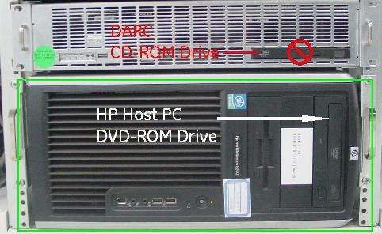
| NOTE: | if it's an All-In-One console, there is no DARC presence. |
Select one of the following methods to re-power the Operator Console:
If Applications are up:
Select the [Shut Down] button.
Select [Restart] then [OK] to restart the system.
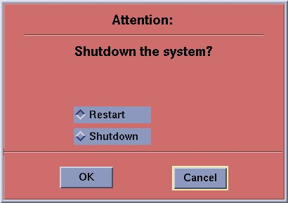
If Application Software is down, at the toolchest open a Unix Shell and type:
{ctuser@hostname} sync
{ctuser@hostname} sync
{ctuser@hostname} halt
The Operator Console monitor will display a System halted message when it is acceptable to power OFF the Operator Console.
Power OFF the Operator Console at the front panel switch.

Wait 30 seconds to allow the disk drive to settle; then power ON the Operator Console at the front panel switch.
As the computer restarts, the booting process messages appear. After the booting process completes, the boot: prompt appears.
At the boot prompt, type the following depending on system type:
(For English Keyboard only) GEHC2<Enter>
(For International Command only) iGEHC2<Enter>
| NOTE: | The Console Operating System load takes approximately
10 minutes. If the boot: prompt does not appear,
then either the DVD-ROM is bad or the Console Operating System DVD
is not installed in the drive. Typing GEHC will result in both scan and display being on one monitor and require a LFC. |
After the OS is loaded, a red button appears and displays [Reboot] .
Remove the OS disk, when it ejects.
Press <ENTER> to reboot.
The Host Computer reboots.
| NOTE: | Do not insert the Application disk into the Host Computer until the system reboots and the [root@localhost] window appears, displaying the [root@localhost root]# prompt. |
There is a single Application DVD used for both the Host Computer and the DARC. All applications software will be loaded to the Host Computer during this process.
| NOTE: | If it's an ALL-IN-One console, don't need to install software on DARC |
| FAILURE TO INSTALL THE CORRECT APPLICATION SOFTWARE AND SELECT THE CORRECT SYSTEM DAS HARDWARE CONFIGURATION WILL RESULT IN SYSTEM DOWNTIME AND DCB CIRCUIT BOARD REPLACEMENT. (THIS FAILURE WILL OCCUR AFTER THE FLASH DOWNLOAD PROCEDURE FLASHES THE FIRMWARE.) | |
After the Host Computer reboots, verify that the window appears with the [root@localhost root]# prompt.
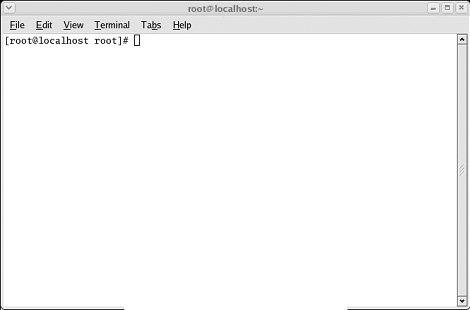
In the root@localhost Window, verify the SCSI Tower MOD and DVD are present after the OS load:
[root@localhost root]#cat /proc/scsi/scsi
Insert the Application DVD into the DVD-ROM drive on the Host Computer. See the illustration below.
| NOTE: | If it's an All-In-One console, there is no DARC presence. |
After approximately 15 seconds a pop-up box appears:
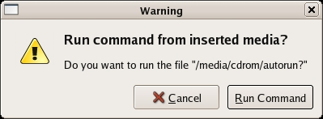
| NOTE: | If the pop-up box Warning does not
appear after two minutes, type the following and wait approximately
one minute for the pop-up box to appear. mount /media/cdrom<Enter> /media/cdrom/autorun<Enter> |
Select [Run Command] to run / media / cdrom/ autorun..
After approximately 15 seconds, an Installation Utility window appears. (See illustration, below.)

Select [Load] . A prompt message appears asking if you wish to load the INFO file from the System State DVD.
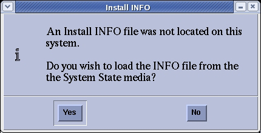
System State DVD:
If you do NOT have a System State or the System State is unusable, select [No] .
If you have a System State DVD, select [Yes] . When prompted, ensure the System State DVD is in the DVD drive in the SCSI Tower (on top of the console), and then select [ok] .

An “unMount media” pop-up may appear. No action is required.
Select the System tab.
See example System Settings screen, below.
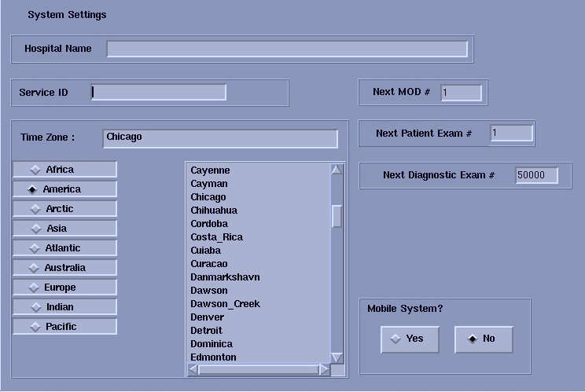
Verify that the Next Patient Exam # on the System Settings screen is the value restored from Save System State. Otherwise, set to 1.
Verify that the proper Time Zone is selected
Select/enter information as required for your system configuration.
Select the Preferences tab.
See the illustration below, for an example Preference Settings screen.
| NOTE: | For 07BW08.X, the screen will appear as below: |
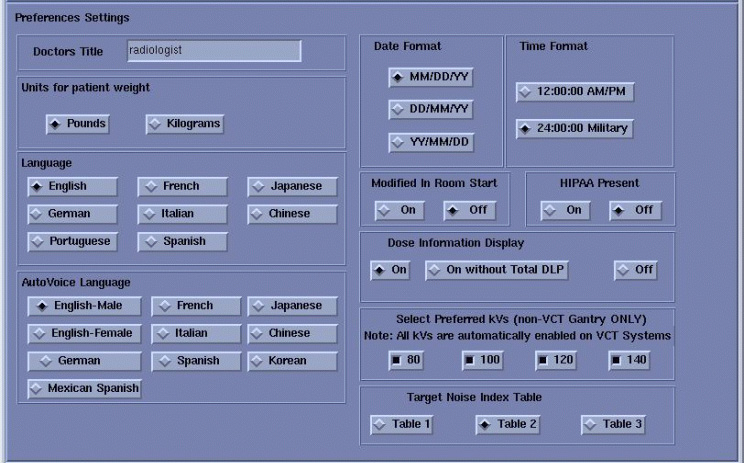
| NOTE: | For 07BW08.X with Service Pack 2 (or greater) loaded or
for 08BW17.X/08BW20.X, the illustration for the Preferences tab will
show the additional languages. At that time the screen will appear
as below:
|
Select the units for patient weight.
Select Language: ( [English] or [other] ).
| NOTE: | To select additional 6 languages: Danish, Swedish, Finnish, Norwegian, Dutch or Euro Portuguese, please select [English] during LFC. After complete all LFC procedures, perform language selection again to preferred language. |
Select Preferred FastCal KV - select the kV to be calibrated during FastCal. These kVs should include all kVs that the site uses for patient scanning.
Select Target Noise Index Table.
(Default is Table 2.)
Verify proper Date Format is selected.
Verify proper Time Format is selected.
Select AutoVoice Language.
Verify Modified in Room Start is set to [Off] . Sites in Japan must be set to [On] .
Set HIPAA Present to [OFF] unless the customer requests HIPAA to be ON.
Select the site preferred Dose Information Display option for the site to use in monitoring calculated Patient Dose (on view edit screen):
Select [ON] (full DOSE Display) or previous Customer setting.
| NOTE: | A scroll bar below this menu may be present. It contains the System Information from the INFO file System State. |
Select the Hardware tab. The Main Hardware screen appears.
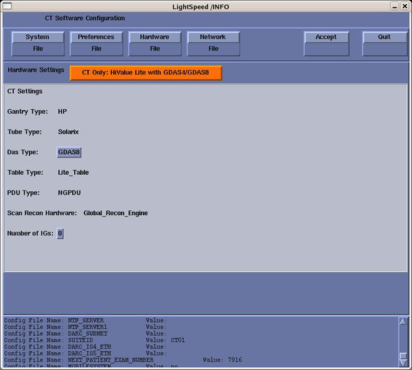
Click on the [Hardware Settings] (orange button) to access the Select hardware configuration screen.
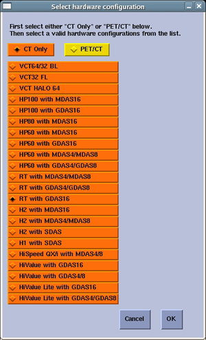
| NOTE: | FAILURE TO INSTALL THE CORRECT APPLICATION SOFTWARE AND SELECT THE CORRECT SYSTEM DAS HARDWARE CONFIGURATION WILL RESULT IN SYSTEM DOWNTIME AND DCB CIRCUIT BOARD REPLACEMENT. (THIS FAILURE WILL OCCUR AFTER THE FLASH DOWNLOAD PROCEDURE FLASHES THE FIRMWARE.) |
Click on the [CT ONLY] . then Select your System types HW Parameters, and select [OK] .
On the Hardware Settings screen, select the proper Number of IGs present in the Operator Console. Select DAS Type.
For 08BW20.X, Console Typecould be selected. The screen will appear as below:
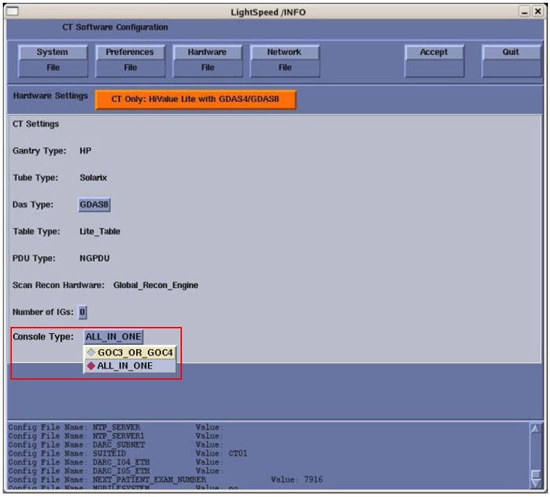
| NOTE: | Console type will be check during installation AUTOMATICALLY. If it is all All-In-One Console, the default “Console Type” will be in “ALL_IN_ONE”, but if it is not All-In-One Console, you can choose other types of console as above. |
Select the Network tab.
See example Network Settings screen, below.
| NOTE: | For 07BW08.X, the screen will appear as below: |

| NOTE: | For 07BW08.X with Service Pack 2 (or greater) loaded or
for 08BW17.X/08BW20.X, the illustration for the Network Settings tab
will show the Station Name. At that time the screen will appear as
below: 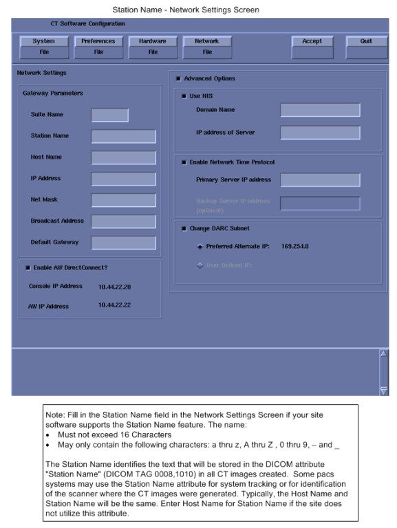 |
Configure Network Settings:
Suite Name - The Suite Name must utilize uppercase letters. It must start with a letter, followed by 3 alphanumeric characters. The total must be four characters long. It is suggested that you choose CT01 for the first scanner (CT02....), unless a different Suite Name is required.
Station Name - The Station Name identifies the text that is stored in the DICOM attribute “Station Name” (DICOM TAG 0008,1010) in all CT images created. Some PACS systems may use the Station Name attribute or system tracking for identification of the scanner where the CT images were generated. Typically, the Host Name and Station Name are the same.
| NOTE: | The Station Name defaults to the Host Name if it is left blank. If entered it:
|
Host Name
| NOTE: | The Host Name identifies the hostname
and AE Title of the scanner. It:
|
IP Address - Site supplied address.
The following procedure should be performed if your customer Ethernet hospital backbone begins with 172.16.0.xx, OR if the scanner will connect to a device with an IP address of 172.16.0.xx.
If hospital backbone starts with 172.16.0.xx and this is a first time install, change the DARC subnet by checking the Change DARC subnet box, and fill in the following value: 169.254.0. Continue and complete the software load on the HOST and DARC.
If the hospital backbone starts with 172.16.0.xx, and the DARC subnet was already changed, verify that the Change DARC subnet box is checked and a subnet is already filled. Continue and complete the software load on the HOST and DARC.
If the DARC subnet was already changed and needs to be set to the 172.16.0 subnet, deselect the Change DARC subnet box. Continue and complete the load on HOST and DARC.
Net Mask - Site supplied address.
| NOTE: | If the hospital backbone IP address is 192.9.220.xx, then the Net Mask must be set to 255.255.255.252. |
Broadcast Address - Site supplied address.
Default Gateway - Site supplied address.
| NOTE: | Make sure the <NUM LOCK> button on the keyboard is not active. If it is, deselect it to enable the [ACCEPT] button in the next step. Failure to deactivate the NUM LOCK results in load issues. |
If your customer has AW Direct Connect, then select Enable AW DirectConnect?. Complete the LFC, making certain to configure this feature in Section 3.12.3. (Do not configure AW Direct Connect now.)
If there is an Internal Option - Internal Subnet setting displayed and checked, then un-check it. (This option might not appear on your system.)
Verify with customer’s network administrator if they have NIS. If they do, ensure the Advanced Options and Use NIS? boxes are checked. If they don’t, ensure these selections are not checked.
Domain Name: add your name here (get name from customer’s network administrator).
Enter the IP Address of Internal Server: add your IP address here (get IP address from customer’s network administrator).
If your customer wants to synchronize the system time to their NTP server, then select Enable Network Time Protocol, and enter the Primary Server IP address.
Select the [ACCEPT] button at the right corner of the User Interface.
An Install INFO pop-up box is displayed.
See the following illustration, for a typical Install INFO message (the Install INFO message is different for each system configuration).
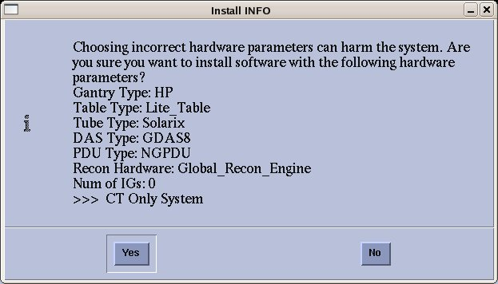
Select [yes] , if correct, and wait for system to reboot.
| NOTE: | If the information is not correct, select the [NO] button. This returns you to the Hardware screen. Select the [Hardware Parameters Selection] button and select the correct system configuration from the displayed list. Select the [Accept] button again, followed by the [YES] button on the Install INFO pop-up to accept the new hardware configuration. |
The following pop-up message appears:
Please make sure the CT Application SW is in the drive - the system will be rebooted.
No action is required for this pop-up. The system will automatically reboot after approximately 10 seconds if the [OK] button is not selected.
| NOTE: | Do not remove the Apps DVD from the Host Computer until instructed to do so. |
As the system reboots, the following shell Installation screen appears and the application software starts loading.

When the system prompts you to reboot (after approximately 13 minutes), Select [Yes] . The system is going down for reboot NOW.

| NOTE: | During the reboot of the console, a message may appear to the effect that the system was not able to determine what the tube type was and to run the TIC tool. This message should be ignored at this point. |
After approximately 3 minutes, a pink pop-up box appears, stating CT Software Auto-Start Disabled. In this box, select [OK] .

| NOTE: | Follow the next procedure, Do NOT type “startup” at this timė |
Press the button on the DVD-ROM drive to remove the Apps DVD from the Host Computer.
Confirm the Host Computer Software type. The software section of the version output should match example shown.
Open a Unix Shell and type the following to see software and hardware Config information:
{ctuser@hostname} cd /usr/g/bin
{ctuser@hostname} swhwinfo
07BW08.X.<hardware revision info here>
Example: 07BW08.2.WB_H_G16_G_GLT
Confirm that the swhwinfo results match the software revision shown on the Applications Disk.
If the revisions match, continue with this procedure.
If the revisions do NOT match, reload the software (Section 3.2).
Type: cat /GEHC*
Release: GEHC/CTT Linux 6.2.9
Built: Wed Jan 3 11:05:37 CST 2007
Confirm that the cat result matches the Operating System version shown on the OS disk.
Close the Unix Shell.
| NOTE: | If it's an All-In-One console, please ignore the steps which are related to DARC and move forward to Section 3.3. There is no DARC in an All-In-One console. |
This section describes the steps necessary to change the DARC Node BIOS to enable the OS load onto DARC Node from the Host Computer. The DARC Node Boot Order BIOS is modified before the DARC Node OS load, and must be returned to original settings after the DARC Node OS load for proper normal operation.
| NOTE: | Be patient. Telnet response may be slow. |
Open a Unix Shell and type the following:
{ctuser@hostname}su -
Password: #bigguy
[root@hostname] service cliservice start
[root@hostname} telnet localhost 623
At Server Prompt type: darc
username <Enter>
password <Enter>
Login successful
dpccli> reset
ok
dpccli> console
| NOTE: | A slight delay here is normal. Be patient. |
Interrupt the DARC boot process to enter the BIOS Setup mode. When the message “Press <F2> to enter setup” appears, press <F2>.
| NOTE: | <F2> may have to be pressed many times before BIOS setting screen can be seen. There will be a short delay before the DARC BIOS setup screen is displayed. |
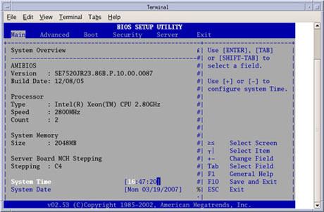
Select Boot Menu, using arrow keys.
Select Boot Device Priority Menu, using arrow keys, then press <Enter>.
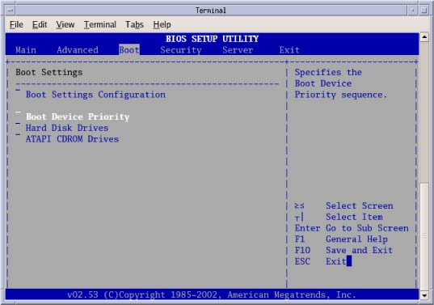
Select 1st Boot Device, using arrow keys, then press <Enter>.
A small window will appear with the options available. Using the down-arrow key, scroll down to highlight IBA 1.1.08 Slot 0338, (for a Westville DARC) or IBA GE Slot 0320v (for a Jarrell DARC), then press <Enter>.

Using the down-arrow key, scroll down to highlight the 2nd Boot Device entry. Press <Enter>.
A small window will appear with the options available. Using the down-arrow key, scroll down to highlight the ATAPI CD-ROM entry (for a Westville DARC) or PS -slimtype COMBO entry (for a Jarrell DARC). Press <Enter>.

Using the down-arrow key, scroll down to highlight the 3rd Boot Device entry. Press <Enter>.
A small window will appear with the options available. Using the down-arrow key, scroll down to highlight the Hard Drive entry (for a Westville DARC). or PM-ST94813A entry (for a Jarrell DARC). Press <Enter>.
(For Westville) Verify the Boot device Priority is set to:
IBA 1.1.08 Slot 0338
ATAPI CD-ROM
Hard Drive
IBA 1.1.08 Slot 0339
Removable Devices
| NOTE: | The removable devices might not be present. This is OK. |
(For Jarrell) Verify the Boot device Priority is set to:
IBA GE slot 0320v
PS -slimtype COMBO
PM-ST94813A
IBA GE slot 0321v
EFI Boot Manager
Press <Esc> to exit back to Boot menu.
Save DARC BIOS settings:
From Boot menu, arrow to (move to) Exit menu.
Highlight Save Changes and Exit, and press <Enter>
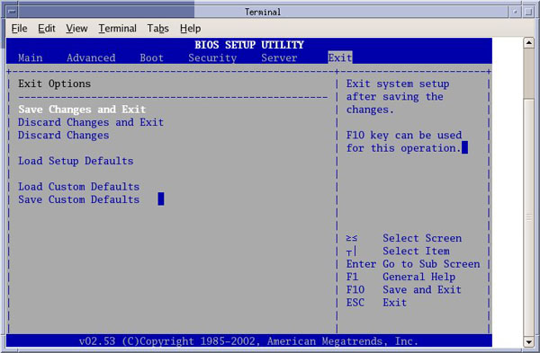
Highlight [OK], and press <Enter>, to “Save configuration changes and exit setup.”
Wait one minute.
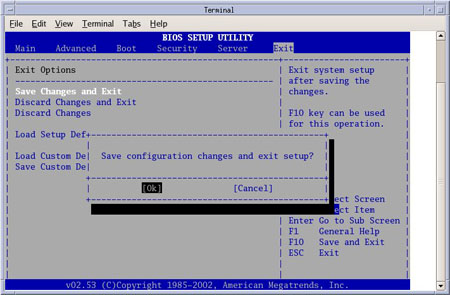
| NOTE: |
(For Westville)
After saving the DARC
BIOS, the DARC BIOS Setup Utility will disappear (within one minute)
and the DARC will begin to Reboot. If the BIOS SETUP UTILITY window does not disappear within a minute, perform the steps within
this section again. (For Jarrell) After saving the DARC BIOS, the DARC BIOS Setup Utility will NOT disappear and the DARC will begin to Reboot. Open another shell:
|
Close the Terminal Window.
| NOTE: | If it's an All-In-One console, please ignore the steps which are related to DARC. |
No DVD is required. OS will be loaded onto the DARC Node from the Host Computer as long as the DARC BIOS Boot Order is configured for Enable Load.
For details on Serial Over LAN CD Usage, refer to VDARC/DARC Node OS Load Troubleshooting.
| NOTE: | The DARC OS was created during the initial Host Applications Software Installation. |
Open a Unix Shell and type the following:
{ctuser@hostname}su -
Password:#bigguy
[root@hostname]cd /usr/g/scripts
[root@hostname] ./load_darc_subsystem
An Attention window appears. See the illustration below.
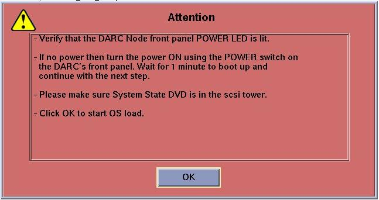
Follow the instructions in the Attention window.
Select [OK] .
The Unix Shell will display output during the DARC load (approximately 33 minutes). Example output is as follows:
[root@hostnamescripts]# ./load_darc_subsystem
[load_darc_subsystem] [Start time] Loading the darc subsystem(OS + Apps) takes 30 minutes
[load_darc_subsystem] [Start time] Loading the darc OS
[load_darc_subsystem] [Time] Loading the darc OS is complete
[load_darc_subsystem] [Time] Loading the darc apps
[load_darc_subsystem] [End time] Loading the darc is complete
[load_darc_subsystem] [End time] Load started: (Date) (Start time)
[load_darc_subsystem] [End time] Load ended: (Date) (End time)
[load_darc_subsystem] [End time] Finished loading darc subsystem.
[root@hostname]#
A sh window displays the OS load messages and Apps load messages.
| NOTE: | The DARC OS Load will stop prematurely ONLY if an error is encountered (refer to VDARC/DARC Node OS Load Troubleshooting). An Error Dialog Box will appear with a brief description of the error. Select [OK] after reading the instructions displayed on the Monitor. Refer to DARC OS Load Pop-Up Boxes for additional information on these error pop-up windows. Also, if any problems arise, verify the correct software disk is installed and verify BIOS Setup Utility Boot Order is correct. |
| NOTE: | A %done status is displayed during the DARC OS load. This is only a timed countdown sequence and does not provide status of the actual load process. |
When the DARC load has completed, the sh window will close.
| NOTE: | If it's an All-In-One console, please ignore the steps which are related to DARC. |
Verify the OS and Application Software has loaded on the DARC.
Open a Unix Shell and type the following:
{ctuser@hostname} ping darc
[Ctrl C] to stop ping
{ctuser@hostname} rsh darc
[ctuser@darc]
If ping is successful but the prompt [ctuser@darc] does not appear, then the OS is loaded but the DARC Apps load process was not successful.
| NOTE: | If it's an All-In-One console, please ignore the steps which are related to DARC. |
(For Jarrell DARC Node) Continue with Section 3.3
(For Westville DARC Node) The Westville DARC BIOS must be returned to the Restore Settings (operational mode) to avoid a known Intel PXE boot problem, which can occur ramdomly and prevent the DARC Node from booting.
This section describes the steps necessary to restore the BIOS on the Westville DARC Node to its original settings for normal operation. This is a required section for all Westville DARC Nodes.
| NOTE: | Be patient. Telnet response may be slow. |
Open a Unix Shell and type the following:
{ctuser@hostname} su -
Password: #bigguy
[root@hostname] service cliservice start
[root@hostname] telnet localhost 623
server: darc
username <Enter>
password <Enter>
Login successful
dpccli> reset
ok
dpccli> console
GEHC/CTT Linux 6.2.9
Kernel 2.6.15-2.5 smp...
See you on the darc side of the moon
darc login:
| NOTE: | A slight delay here is normal. Be patient. |
| NOTE: | If the "reset” and “console" commands fail and the "Active SOL failed" message is displayed, connect to the DARC via SOL, and then type the command "console". With the SOL session connected to the DARC Console, press the "reset" switch (not the power switch) on the front of the DARC and proceed with the instructions below. |
Interrupt the DARC boot process to enter the BIOS Setup mode. When the message “Press <F2> to enter setup” appears, press <F2>.
| NOTE: | <F2> may have to be pressed many times
before BIOS setting screen can be seen. There will be a short delay before the DARC BIOS setup screen is displayed. |

Select Boot Menu, using arrow keys.
Select Boot Device Priority Menu, using arrow keys, then press <Enter>
Select 1st Boot Device, using arrow keys, and press <Enter>.

Continue setting Boot Device Priority.
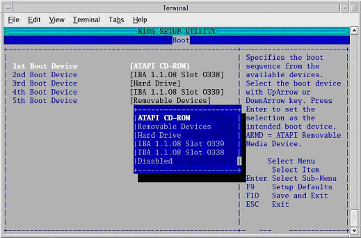


Verify the Boot device Priority is set to:
ATAPI CD-ROM
Hard Drive
IBA 1.1.08 Slot 0339
IBA 1.1.08 Slot 0338
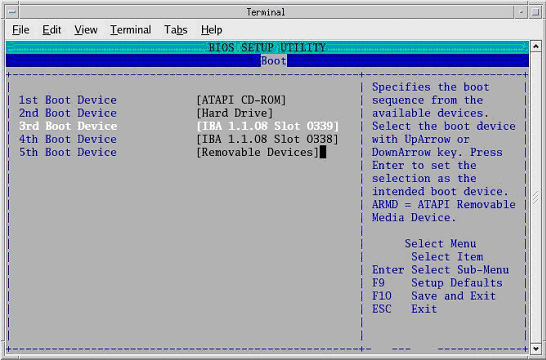
Press <Esc> to exit back to Boot menu.
Save BIOS settings:
From Boot menu, arrow to (move to) Exit menu.
Highlight Save Changes and Exit, and press <Enter>.
Highlight [OK] , and press <Enter>, to “Save configuration changes and exit setup.”
Wait one minute.
| NOTE: | After saving the DARC BIOS, the DARC BIOS Setup Utility
will disappear (within one minute) and the DARC will begin to Reboot.
If the BIOS SETUP UTILITY window does not disappear
within a minute, perform the steps within this section again.
|
When the darc login: prompt appears, close the Terminal Window.
| NOTE: | If it's an All-In-One console, please ignore the steps which are related to DARC. |
Verify the OS and Application Software has loaded correctly.
Open a Unix Shell and type the following:
{ctuser@hostname} rsh darc
[ctuser@darc] cd /usr/g/bin
[ctuser@darc bin] ./swhwinfo
[ctuser@darc bin] cat /GEHC*
Confirm that the swhwinfo results match the software revision shown on the Applications disk.
07BW08.X.<hardware revision info here>
Example: 07BW08.X.H2_P_S4_G_Zeus
If the revisions match, continue with this procedure.
If the revisions do NOT match, reload the software (Section 3.2).
Verify that cat results match the Operating System version and Software Build Date.
Release: GEHC/CTT Linux 6.2.9
Built: Tue Jul 12 12:29:10 CDT 2005
Close the Unix Shell.
You must set the date and time on the Host Computer with Application Software down.
Open a Unix Shell and log in as root:
{ctuser@hostname}su -
Password: #bigguy
Set date and time. Type the following:
{root@hostname}# setdate <Enter>, to be prompted through the individual entries. Where:
Note: Type “q” to quit anytime. Enter to proceed:
Note: TO BE ACCURATE, this tool will prompt you to enter the “Second”. Watch your clock or PC carefully to enter the proper value, and hit [Enter] at the right second to set the accurate time. Enter to proceed:
Enter the current Year (1980-2030) [2006]:
Enter the current Month (1-12) [04]:
Enter the current Day (1-30) [14]:
Enter the current Hour (Military Time) (0-23) [18]: 15
Enter the current Minute (0-59) [13]: 18
Enter the current Second (0-59) [00]: 10
\nUpdating the time on the OC and SBC, Please Wait...
PING darc (172.16.0.2) 56(84) bytes of data.
Upon completing either of the above commands, the user will receive one of the two following responses:
If the DARC Node has been replaced and has no software, the following response will appear:
| NOTE: | If it's an All-In-One connsole, please ignore this section. |
--- darc ping statistics ---
1 packets transmitted, 0 received, 100% packet loss, time 0ms
The darc is not responding. darc will sync time with oc during next darc reboot
Current OC date : Fri Apr 14 15:18:00 CDT 2006
Could not retrieve the SBC TImeZone.
Please make sure the TimeZones for the OC and SBC are the same.
[root@hostname]#
If the DARC Node is being reloaded and had software, the following response will appear:
--- darc ping statistics ---
1 packets transmitted, 1 received, 0% packet loss, time 0ms
rtt min/avg/max/mdev = 0.139/0.139/0.139/0.000 ms, pipe 2
connect to address 10.0.1.2: Connection refused
connect to address 10.0.1.2: Connection refused
trying normal rsh (/usr/bin/rsh)
connect to address 10.0.1.2: Connection refused
connect to address 10.0.1.2: Connection refused
trying normal rsh (/usr/bin/rsh)
Current OC date : Fri Apr 14 16:14:05 CDT 2006
Current DARC date : Fri Apr 14 16:14:04 CDT 2006
setdate completed with NO ERRORS.
[root@hostname]#
Type:
[root@hostname]# shutdown -y -g0 << this is a “zero”, not an “oh”
Turn OFF the Operator Console power at the front switch.
Wait ten (10) seconds, then turn ON the Operator Console power at the front switch.
After approximately 4-5 minutes a pink pop-up window appears with the message:
CT Software Auto-Start.
You have 5 Seconds to cancel Software Auto Startup.
Select [Cancel] .
Then a pink pop-up window appears with the message:
CT Software Auto-Start.
Application Startup cancelled at user's request.
To manually start applications type 'startup &' on the console window.
Click [OK] .
Open a Unix Shell and type the following:
{ctuser@hostname}sync
{ctuser@hostname}sync
{ctuser@hostname}reboot
A message appears: The system is going down for reboot NOW!
After Operator Console reboot, application will be started up automatically.
A pink pop-up Attention Message appears: OC initializing. Please wait….
| NOTE: | If a message concerning incorrect DAS configuration is encountered, review the Error Log for the Card List issue. Select from the following two methods to alleviate this issue: Flash Download Update or Power OFF the Axial Drive and HVDC at the Gantry service panel - turn OFF DAS Power for 1 minute - turn DAS Power back ON - turn Axial Drive and HVDC at the Gantry service panel back ON - Flash Download Update - verify error message has disappeared. If error message reappears then troubleshoot the DAS/DCB. |
Select [OK] for other pink message boxes that appear throughout the reboot process.
After each reboot during the software load process, an 'Unrecognized X-Ray Tube' message will be displayed (as shown below) until the tube identity has been selected (later in this procedure) and 'Flash Download' has also been performed.
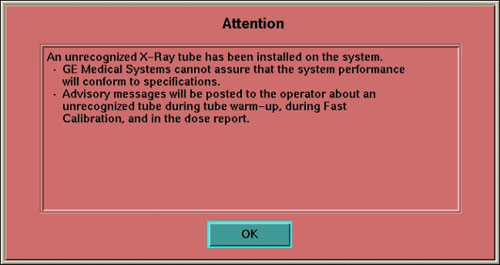
If any Recon Selftest Failures are encountered, review the error log. Make certain to note the errors for troubleshooting after the LFC.
| For Perfusion and Denta Scan: If you loaded software in a language other than English, please reconfig, changing the language to English, to load these two options. Otherwise, the LFC procedure may fail. | |
| Options must be loaded before Protocols. | |
Insert the Options DVD in the SCSI Tower DVD-RAM drive.
| NOTE: | (For GE Healthcare Employees Only) If you do not have the Options DVD, then you can use the eLicense feature. Follow this link to the eLicense Page: http://egems.gehealthcare.com/elicense/index.jsp |
| NOTE: | Options loaded via DVD or CD will NOT be saved to System
State. All Options loaded via e-License WILL be saved to System State. |
With the Applications up, select the [SERVICE DESKTOP] .
Select [CONFIGURATION] .
Select [INSTALL OPTIONS] . A blank Software Options screen appears:
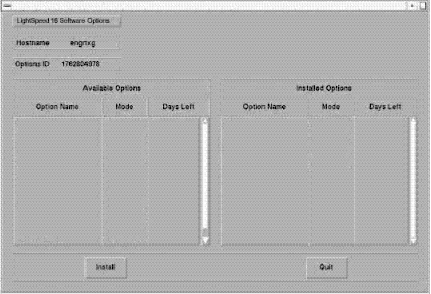
Select [INSTALL] . A Select Mechanism window opens (see illustration, below). Select the mechanism through which you want to install Option Keys.

Select Permanent. A Select Device window opens (see illustration, below). Select the mechanism through which you want to install the Permanent Option Keys.
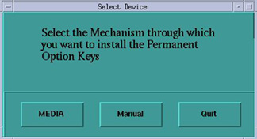
Select the [MEDIA] button and insert the Options DVD or MOD.
Select [OK] . Available options appear on the Software Options screen.

Select either the DMPR (Direct Multi Planar Reformat) or Variviewer Option installations, if applicable, per Note:
| NOTE: | IMPORTANT! DMPR and Variviewer are mutually exclusive options with 05MW14.5 or later software. If you have DMPR (the full option), software will not allow you to install Variviewer, and vice-versa. For example, do not install Variviewer, if you plan to load DMPR. |
Perform the following Option installations, if applicable:
| NOTE: | The order of installation is critical. |
VolumeViewer
CardIQ2
CardEP
Conect pro (enable pps)
Exam Split (VES)
Pick remaining options one at a time from the Available Options list and select [INSTALL] to update each selection and place it on the Installed Options List.
When the process is complete, select [Quit] then [Quit] to close the window.
| NOTE: | After Select [Quit] , please wait for 5 minutes before perform any other operation. |
(For GE Heathcare Employees or Licensed Customers Only) If applicable, load Class C Service Software now.
(For GE Healthcare Employees Only) If applicable, load Class M Service Software now.
Open a Unix Shell.
Type: su -
Password: #bigguy<Enter>
Insert the Class C software CD-ROM into the HP Host CD drive. Wait for the disk read to STOP.
Install the Class C software on the system:
At the superuser prompt, type: install.classC
When the installation process is complete, the Console reports the following:
Finished loadingSystem TypeClass C software.
Verify that the Class C software is on the system:
At the superuser prompt, type: showprods | grep -i classc
Verify that the window displays a list of CLASS C file information and locations.
Open a Unix Shell.
Type: su -
Password: #bigguy<Enter>
Insert the Class M software CD-ROM into the HP Host CD drive. Wait for the disk read to STOP.
Install the Class M software on the system:
At the superuser prompt, type: install.classM
When the installation process is complete, the Console reports the following:
Finished loadingSystem TypeClass M software.
Verify that the Class M software is on the system:
At the superuser prompt, type: showprods | grep -i classm
Verify that the window displays a list of CLASS M file information and locations.
| NOTE: | Before install any Service Pack or Patch, please confirm that the Service pack/patch version matches the Application Software version. |
The initial release of a Service Pack CD may not contain any patches. Service Pack CDs will include any new patches and all older patches that are still applicable. If a site is required to uninstall a Service Pack, the previous Service Pack may need to be installed. Therefore, retain the earlier version of the Service Pack.
Refer to instructions (sometimes inside the jewel case, as a Class A instruction, or FMI) and load the most current Service Pack at this time.
| NOTE: | If Service Pack questions arise, contact Local GE Service. |
Open a Unix Shell.
If Application software is up, perform{ctuser@hostname}cleanMon.
In the Unix Shell, become root:
{ctuser@hostname} su -
Password:<password>
| NOTE: | If the Password has not been modified by the site and is not known, contact Local GE Service. |
Perform the following steps to install the Service Pack CD:
[root@hostname]#start_udev
A message will return: OK
Wait 15 seconds after the OK is returned, then type the following install script:
[root@hostname]#patch_install -c
| NOTE: | If the Service Pack fails to install, perform [root@hostname]#start_udev. Wait 15 seconds after OK, then retry the Service Pack. |
Any patches on the Service Pack CD will be listed. Before installation of each patch, the window will wait for user's confirmation as follows:
I will install update Patch Name, is this ok ? [y/n]
Input y to install this patch or n to cancel installation of this patch.
After installing the Service Pack CD, type patch_status in the Shell window to determine which Service Pack patches were installed (if any). The following is an alternate command to verify the Service Pack load:
[root@hostname]#showprods | grep -i ServicePack
Type:[root@hostname]#reboot
| NOTE: | A reboot is always required after a patch is installed. Additional processes may be required for installing certain Service Pack media. Refer to the instructions sent with the Service Pack. |
| NOTE: | Restart Application to Restore System State |
Open a Unix Shell and verify the SCSI Tower MOD and DVD are present:
{ctuser@hostname} scsistat
Close the Unix Shell.
Insert the Save System State DVD into DVD-RAM SCSI Tower drive.
Select the SERVICE icon.
| NOTE: | (For GE Healthcare Employees Only) If the Service Key is installed, press the (1), (2), (3) keys in order to proceed. |
Select: [UTILITIES]
Select: [SYSTEM STATE]
Select [ALL]
Select [RESTORE]
Verify the overall system state content has restored correctly (look for message “Save/Restore System State Completed Successfully”), then select [CANCEL] .

When completed, select [DISMISS] or close the window.
| NOTE: | If Scan Hardware Reset question appears - answer [NO]. This reset is performed during FLASH Download Update. |
The Reconstruction (not Scan) portion of the system can be tested at this point.
When Application Software is up, perform the following:
Select [Recon Management] , and select [Restart Queue] if not in the Idle Mode.
Select [RETRO RECON] on the left Monitor.
Select the rat gold series.
Select [SELECT SERIES] .
Select [CONFIRM] .
Verify the image(s) reconstruct and are displayed.
Remove Rat Gold generated images via Image Works.
Select [QUIT] .
| NOTE: | only applicable with the Service security key |
Select the Service Icon.
Select [Diagnostics] .
Select [Image Generation]
Select [Recon Data Path] .
Verify it is set to 1 and ALL.
Select [Run] .
Verify Recon Data Path tests pass.
Select [Dismiss] or close the GUI.
| NOTE: | The Flash Download takes anywhere from 5-30 minutes, depending on which subsystems require updates. |
Before running the Flash Download Tool, verify the reset switch at the gantry is not flashing and reset the 120 VAC, if necessary. Also, try to ping the following (press <Ctrl-C> and close the shell when finished pinging), to see if there are any issues:
ping orp
ping stc
- OR -
ping tgp
Select the [SERVICE DESKTOP] .
Select in sequence: UTILITIES → FLASH DOWNLOAD.
Select [UPDATE] . Ignore any initial errors.
When the pop-up shown below appears, enter the Collimator Serial Number, and select [Accept] .
| NOTE: | This pop up may not appear if the Collimator Serial Number was retrieved from the System State. If the pop up does not appear, go to step 7. |

When the pop-up shown below appears, select [Yes] , to save the CCB file.

When then Flash Download process is complete, select [DISMISS] or close the window.
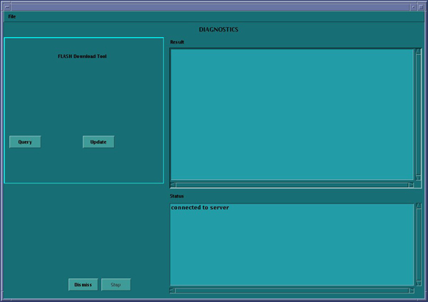
| NOTE: | After Flash Download the system will report the following
message: The entire Generator database has been reset. You may now restore JEDI runtime parameters. Filament calibration is required before scanning patients. If you are reloading software, this message may not appear. If you get this message, you must perform a Filament Calibration, because the JEDI database was reset. |
If HIPAA is turned ON, then configure it now. (Refer to HIPAA Configuration) When HIPAA configuration is complete, return to this procedure.
For general information on Product Network Filters, please see Product Network Filter Theory.
If your customer has special network requirements, then proceed toConfigure Product Network Filters now. When PNF configuration is complete, return to this procedure.
| NOTE: | If network problems arise after configuring PNF:
|
If the site requires the configuration of AW Direct Connect, then configure it now (see AW Direct Connect). When configuration is complete, return to this procedure.
|
(For Scanners with GE Tubes)
If the software
is installed by a non-GE person or the GE field engineer does not
have a service key, a GE Field Engineer is required On-Site within
30 days, to perform the verification portion of this procedure. This
verification cannot be done by non-GE employees. If a GE Service employee
is not currently on site, please contact your GE Healthcare representative
to arrange a visit. This section is absolutely critical to perform. Failure to do so will result in nuisance pop-ups to the customer and tube performance may decrease. | |
If the tube in your system has a ’Smart ID’ board, the software automatically selects the tube identity, and sets it to ‘GE Tube’. There is no action needed. For all other systems or if the software does not automatically select the tube identity, follow the procedure shown in the Flowchart below.
Verification that a tube is a GE Healthcare tube (called “GE Tube” in the TIC tool) can be done by checking the tube insert model number (2120785 or 2120785-2), which can be found on the tube rating plate. (Exception: The “Performix Pro” is a GE OEM tube, but does not have this tube insert model number.)
| NOTE: | Do not double-click the Tube Certification Tool. This will cause more than one tool window to be displayed; one with message ‘service key information not available’. If this happens, close the window and try again. If this happens more than once, reboot system and try again. |
Illustration 1: Selection of Tube Identity

Flowchart Note:
Possible pop-up messages at start-up:
If the tube selection is GE tube without time limit, no pop-up messages relating to tube identity on boot up.
If the tube selection is GE with time limit, a message with days remaining for GE FE to verify tube will be shown on boot up until GE FE removes the time limit with service key. If not verified by GE FE within the time limit, the system will default to 'All Others'.
If the tube is set to 'All Others', unrecognized x-ray tube installed message will always be shown at boot up.
Please refer toTube Install Certification Tool - Screens for examples of the screens displayed by the Tube Install Certification Tool.
Overview: This is a firmware requirement to load tube identification parameters.
| NOTE: | The Flash Download takes anywhere from 5-30 minutes, depending on which subsystems require updates. |
Before running the Flash Download Tool, verify the reset switch at the gantry is not flashing and reset the 120 VAC, if necessary. Also, try to ping the following (press <Ctrl-C> and close the shell when finished pinging), to see if there are any issues:
ping orp
ping stc
- OR -
ping tgp
Select the SERVICE icon.
Select in sequence: UTILITIES → INSTALL → FLASH DOWNLOAD.
Select [UPDATE] . Ignore any initial errors.
When then Flash Download process is complete, select [DISMISS] or close the window.

| NEVER Use [CTRL - ALT - DELETE] to reboot the host computer. This technique will NOT reboot all console subsystems, and as such is an unacceptable practice. | |
To restart the system:
Replace the Hospital Backbone Ethernet cable to the Console Bulkhead Assembly (located at the rear of the Operator Console).
Open a Unix shell and type the following:
{ctuser@hostname} sync
{ctuser@hostname} sync
{ctuser@hostname} reboot
When the system comes up the following screen will be displayed if HIPAA Present was set to On during the LOAD process. Verify the admin screen below has the following 'Select user':
Select user: root
Password: #bigguy
The following subsections contain information that may or may not be fixed for 07BW08.X with Service Pack 2 (or greater) loaded or for 08BW17.X/08BW20.X. Verify each subsection for your specific host type, and perform adjustments as required.
Autovoice Settings (Fixed with Service Pack 2 or 08BW20.X)
The Autovoice settings process must be performed for every LFC until Service Pack 2 is loaded. It is possible that after performing a LFC without Service Pack 2 (or greater) loaded, the system may exhibit two different problems related to Autovoice settings: Low Volume and / or Feedback (squealing or noise) through the speakers.
Volume Adjustment (Fixed with Service Pack 2 or 08BW20.X)
If Autovoice volume is too low:
Select the “Autovoice Volume” (“audioSetting”) tool from the Tool Chest menu to increase the volume as needed.
Click [Save] , then [OK] . Changing Autovoice settings may result in feedback issues. If this occurs, proceed to step 3.
Feedback Remediation (Fixed with Service Pack 2 or 08BW20.X)
If Autovoice feedback issues exist, perform the following steps:
Open a Unix Shell.
Type alsamixer, then <Enter>. The Autovoice Settings screen appears as below:

| NOTE: | Settings shown may not depict the final settings for your console. Settings vary from console to console. |
Press the <right-arrow> key to move the cursor selection to the PCM slider.
Press the <up-arrow> key to increase the PCM setting to 100%.
If feedback is heard, press the <right-arrow> key to move cursor selection to the Line slider.
Press the <down-arrow> key to decrease Line setting until feedback is no longer heard.
| NOTE: | Do not mute the Line device as it is needed for Autovoice Record. |
When you have completed your adjustments, press <Esc> to exit AlsaMixer.
If the Line setting was changed, then STOP. You have completed Autovoice setup. If the Line setting was not changed, select the Autovoice Volume tool from Tool Chest menu and click [Save] , then [OK] to save the PCM settings to file.
| NOTE: | If Line setting was changed and then the Autovoice Volume settings saved, the Line value set via AlsaMixer is reset to “61.” (It was overwritten by the “Save.”) Repeat steps 5 through 7 to adjust the Line settings. |
Autovoice Settings
If the Autovoice setting is equal to 85 (i.e. factory default setting), then do not perform volume adjustment. If the Autovoice setting is higher or lower than 85, then it is recommended to perform volume adjustment.
Volume Adjustment
Select the “Autovoice Volume” (“audioSetting”) tool from the Tool Chest menu to increase the volume as needed.
Click [Save] , then [OK] .
Insert the Save System State DVD into the SCSI Tower DVD-RAM drive.
Select [Service] icon.
Select CT button.
Select [Utilities] then [System State] .
Select [All] to select all the cals, characterizations, etc.
Select [Save] .
Select [Yes] .
When completed select [Cancel] then [DISMISS] .
Close the Service Desktop window in the upper left corner of the screen.
| NOTE: | Load any applicable software FMIs (software patches) prior to performing system sanity scans. |
Successfully perform a Scout scan.
Successfully perform a Helical scan.
Successfully perform an Axial scan.
If have DICOM print configured, perform DICOM print to confirm network operation (Product Network Filter (PNF) setup).
If have archive server configured, perform image archive & retrieve to confirm network operation (PNF setup).
| NOTE: | 1) After loading Class C & Class M Software,
perform a Save System State. 2) After loading Class C & Class M Software disable Telnet via PNF. |
Software Load Process is now complete.
Perform FastCal as required.
Remove the System State DVD-RAM from the SCSI Tower.
Replace the front and rear Operator Console covers.
Save System State:
Insert the Save System State DVD into the DVD tower drive.
Select: [SERVICE DESKTOP]
If reloading software, select: [UTILITIES]
Select: [SYSTEM STATE]
Select [ALL] to select all the cals, characterizations, etc.
Select [SAVE] .
If applicable, select [OK] when the following message appears: System State Media Status: Please insert a DVD or MOD into the drive and press Save again.
When completed select [DISMISS] .
Save all reformat / recon protocols.
Close the Service Desktop window in the upper left corner of the screen.
Sites performing the next sub-section should not remove the DVD from the SCSI Tower DVD-RAM drive.
When using Smart Step Option, the cradle release button on the Handheld controller does not work without Service Pack 2 (or greater) loaded. Use the Cradle Release button on the gantry.